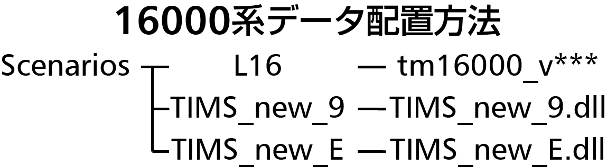

BVE5 東京メトロ16000系
v1.0公開：2019年7月15日v1.1公開：2019年8月11日
v1.2公開：2020年1月19日
v1.3公開：2020年9月21日
v1.4公開：2021年5月5日
v1.5β公開：2023年10月1日
はじめに
16000系は、当方が毎日利用している東京メトロ千代田線の主力車両で、2010年に前期車、2015年に後期車が登場しています。毎日利用することもあって、まずは！、とこの車両を製作することにしました。パネルは写真をベースとしながらも所々自分で絵画したり、雑音のないサウンドが求められたりと、難しいことの連続でしたが、色々な方に支えられ、最後まで作ることができました。皆様には心から感謝いたします。データについて
多くの作者から前期車のアドオンが出ておりますが、当アドオンは後期車のデータとなっております。またVehicleデータが3種類ありますので、必ずデータ内のReadMe.txtをお読みください。20/1/19追記 前期車を公開しました！
PHOTO GALLERY
スクリーンショットの撮影には舞姫様・常磐緩行線（現在非公開）及びUmikyuT様・小田急線を使用させていただいております。地下区間では、前照灯や知らせ灯が目立ちやすくなるほか、モニタの照度を変更しています。 また、右モニタの表示内容は、使用しているマスコンキーによって変化します。
左・上からハイビーム、ロービーム、尾灯

前照灯変化を再現しており、マスコンキー抜取時には尾灯、挿入時には前照灯が点灯します。 また、マスコンキー挿入時に「J（初期では「8」キー）」キーにてハイビームとロービームの切り替えができます。
各社の保安装置を一つのデータで切り替えながら運転できます。 また、左側のNo.1モニタでは、計器の独特のラグを再現するとともに、ATOプラグインの設定により自動運転時の挙動も再現しました。
指定路線
UmikyuT様作小田急線に指定いただいております。また、公開しておりますパッチを使用し、柏鉄道フォーラム様の常磐緩行線で運転できるようになっております。ファイル配置・注意等

TIMSプラグインは当方Pluginページで公開しております。
また、運転動画等は無改造・最新版のものを使用してください。旧版のものでの運転動画の撮影は禁止します。
ReadMe
V1.5βのReadMeをダウンロード前にこちらからご覧ください。Special thanks
- わかめ太郎様・ニッシー様 アドバイスをいただきました。
- あすく様 各種プラグインを使用させていただきました。
- kikuike様 各種プラグインを使用させていただきました。
- oer-meel様 小田急線用のATSプラグインを使用させていただきました。
- 高橋うさお様 メトロ総合プラグインを使用させていただきました。
- りんくす様 motor音を製作していただきました。
- jus様 motor音を制作していただきました。
- UmikyuT様 小田急線データにご指定いただきました。
- mackoy様 BVEを製作されました。
ダウンロード
v1.5でフォルダ構成が大幅に変わりました。すでにv1.4を持っている方は、一旦データを削除してから導入してください。なお、今バージョンより自炊TIMSは不要です。ダウンロード